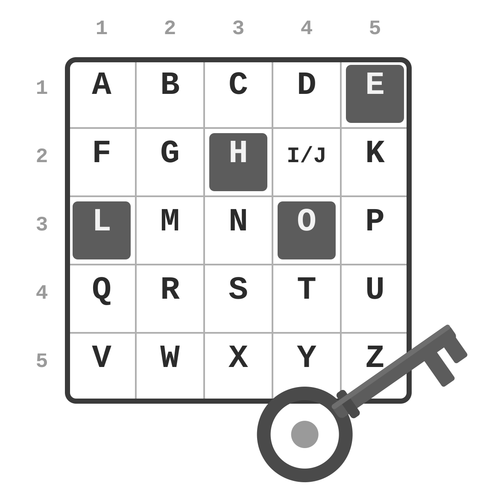

Let's Talk
Cryptography
Polybius Cipher
The Polybius Square is a device invented by the ancient Greeks, Cleoxenus and Democleitus, and popularized by the historian and scholar Polybius. The method is used for representing message characters by a smaller set of symbols.
There are several encryption methods using the Polybius square. One of them involves placing the alphabet in a 5×5 grid, with I and J sharing a cell, and replacing each letter with its row and column numbers. For example, HELLO becomes 23 15 31 31 34.
Source: WIKIPEDIA

Practice
Using the grid in the image, decode: 11 52 15 43 34 32 15
See Answer: Awesome